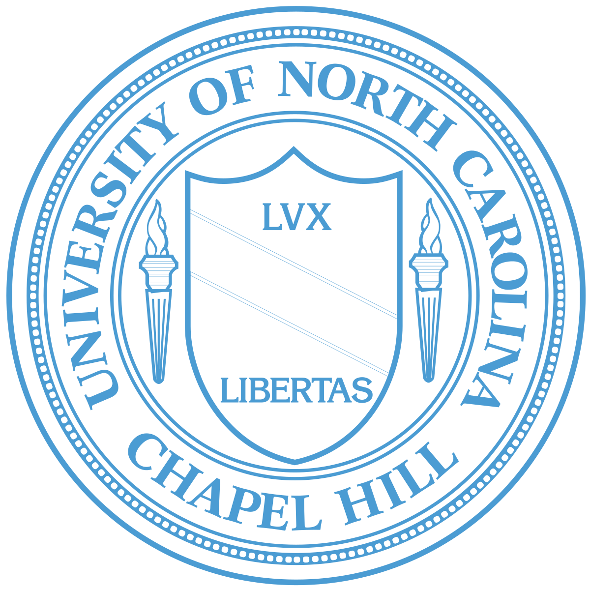
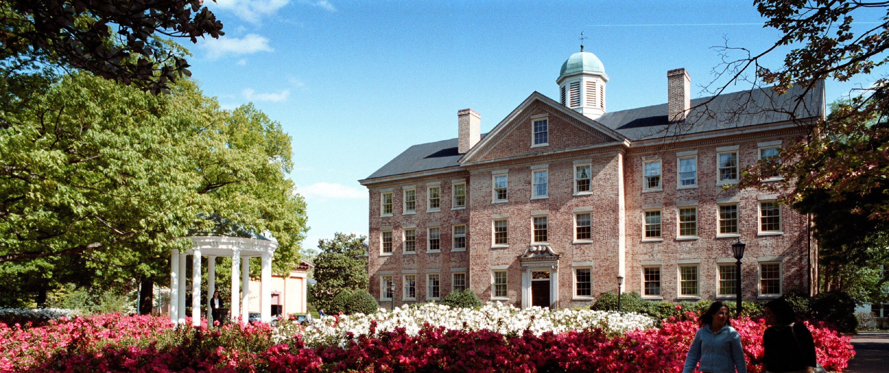
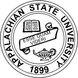
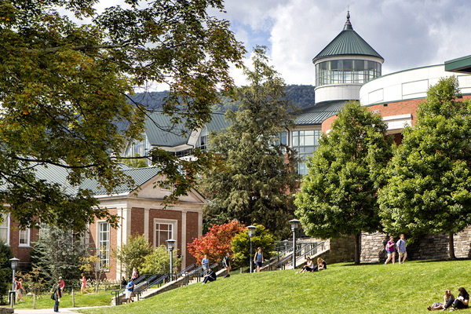
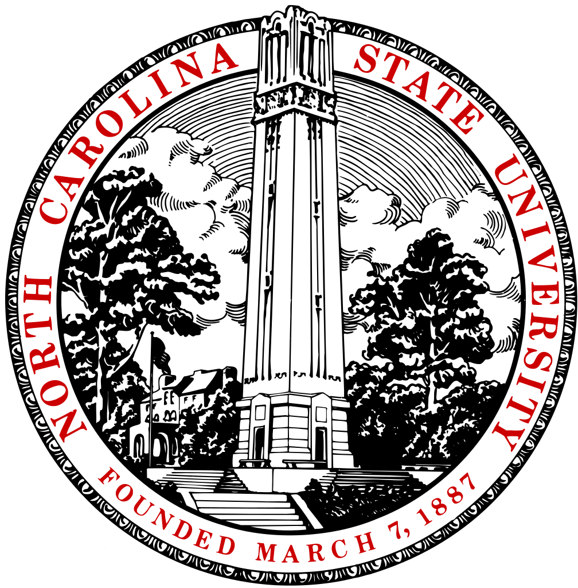
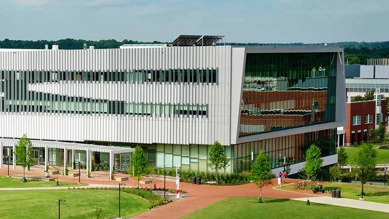

Duke University is a private institution that was founded in 1838. It has a total undergraduate enrollment of 6,639 and the
setting is Suburban. It utilizes a semester-based academic calendar. Duke University's ranking in the 2017 edition of Best Colleges
is National Universities, 8. Its tuition and fees are $51,265 (2016-17). I want to go here because it's very prestigious and has a
great ranking as far as computer science programs go in college. I am currrently enrolled in Duke's TIP program which gives me an
advantage in the application process.
The student-faculty ratio at Duke University is 6:1, and the school has 73 percent of its classes with fewer than
20 students. The most popular majors at Duke University include: Public Policy Analysis, General, Biology/Biological Sciences, General,
Economics, General, Bioengineering and Biomedical Engineering and Psychology, General, but i'd be going for a computer science degree.
The average freshman retention rate, an indicator of student satisfaction, is 97 percent.
 
The University of North Carolina at Chapel Hill, also known as UNC, or simply Carolina,[11] is a public research university located in Chapel Hill, North Carolina, United States. It is one of the 17 campuses of the University of North Carolina system. After being chartered in 1789, the university first began enrolling students in 1795, which also allows it to be one of three schools to claim the title of the oldest public university in the United States. I want to go here but not as much as Duke or even App State. I have no advantage to get into here.
 
Appalachian State University is a comprehensive public, coeducational university in Boone, North Carolina, United States. Appalachian State was founded as a teacher's college in 1899 by brothers B.B. and D.D. Dougherty. It expanded to include other programs in 1967, and joined the University of North Carolina system in 1971. It is the system's sixth largest with about 18,000 undergraduate and 1,000 graduate students. It offers 174 undergraduate and 37 graduate majors as well as a doctoral degree in educational leadership. I want to go here because it's ranked one of the best non-ivy league colleges in the world and has a good computer science program. My brother goes here so maybe that would give me some advantages once i got in if i needed help.
 
North Carolina State University is a public research university located in Raleigh, North Carolina, United States. It is part of the University of North Carolina system and is a land,sea,nd space grant institution. The university forms one of the corners of the Research Triangle together with Duke University in Durham and The University of North Carolina at Chapel Hill. I want to go here because it's a good school for computer science. I have no advantages to go here but I might as well try.